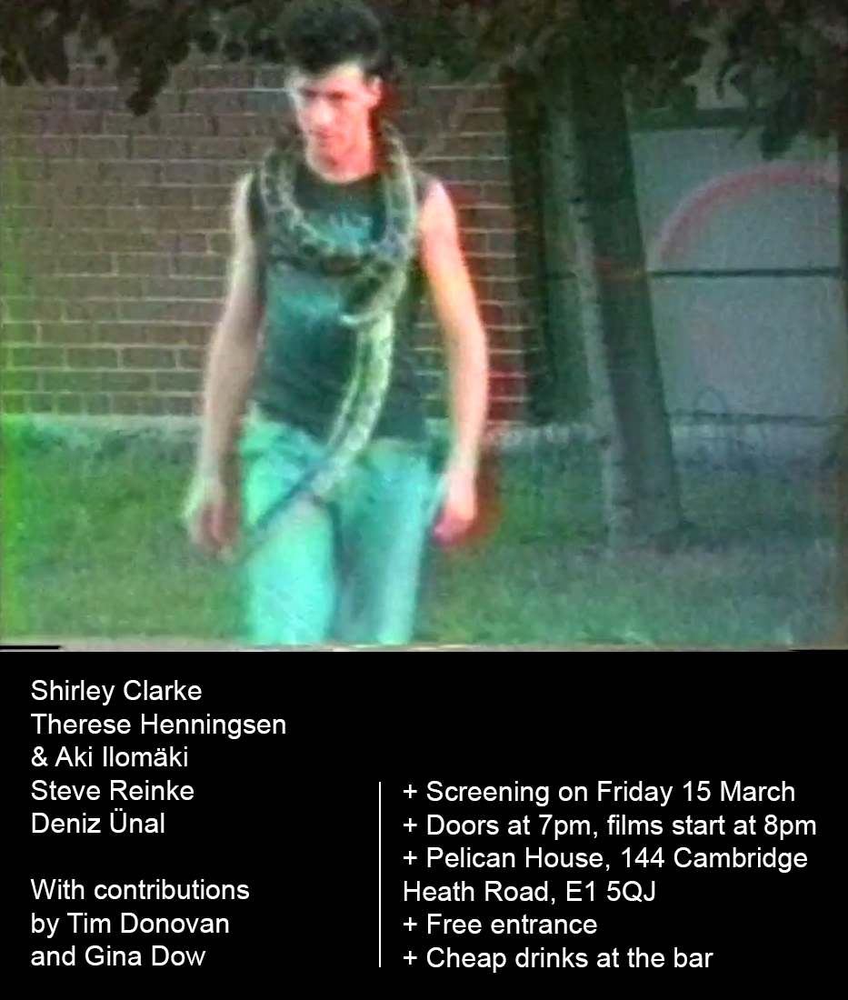

Dear friends,
We are showing some films on Friday 15 March 2024 at Pelican House, 144 Cambridge Heath Road, E1 5QJ.
Doors at 7pm, screening starts at 8pm. Bar will stay open afterwards.
Screening includes:
Shirley Clarke
Therese Henningsen & Aki Ilomäki
Steve Reinke
Deniz Ünal
With contributions by Tim Donovan and Gina Dow
Shirley Clarke was an American filmmaker.
Tim Donovan is an artist and tiler based in Austin, Texas.
Gina Dow is a Canberran based in southern New South Wales, Australia.
Therese Henningsen is a filmmaker based in London.
Aki Ilomäki is an artist based in Palermo, Italy.
Steve Reinke is a Canadian artist and writer.
Deniz Ünal is an artist and teacher, born in Istanbul and living in London.
+ Friday 15 March, 7pm
+ Pelican House, 144 Cambridge Heath Road, E1 5QJ
+ Free entrance
+ Cheap drinks at the bar
Hope to see you there. Let us know if you can make it.
Bronte and Freya